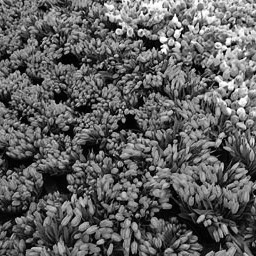

This is a project in Multimedia class taught by Prof. Dan Schonfeld. The goal of project is to understand JPEG compression and 2-D discrete cosine transform in great depth.
1. The image is subdivided into many blocks with size of 8*8 pixel
2. The value of every pixel was subtracted by 128
3. Apply 2-D discrete cosine transform to the block.
4. Quantize the block. After quantization the high frequency components are reduced.
5. Generate the 1-D sequence used for serialization with the zigzag pattern.
6. Process all other blocks as above
Compression rate: 1-M/m
SNR=P/Pe
M: the bytes which the jpeg use to represent image
m: the bytes to store the image directly, which is 256*256 bytes
P: the power of the image P=sum(illumination of each point)^2
Pe:the power of the noise Pe=sum(difference of illumination of each point before and after compression )^2
Fig.1 Size:3266 Bytes Compression radius: 95% SNR:750
Fig.2 Size:8759 bytes Compression radius: 87% SNR:311
Fig.3 Size:10919 bytes Compression radius: 83% SNR:143
Fig.4 Size:14510 bytes Compression radius: 78% SNR:91
The result shows that the simpler of image, the higher of the compression rate and higher SNR